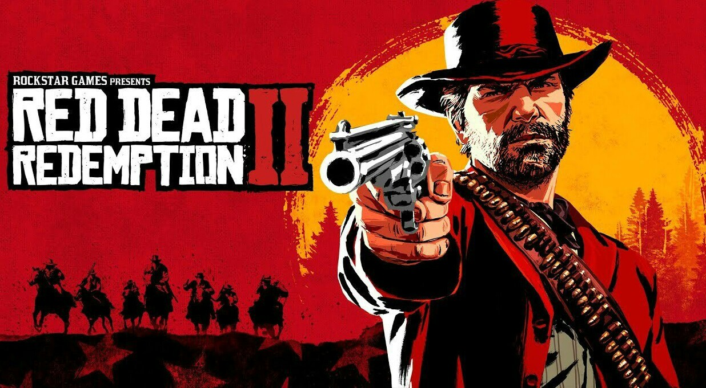
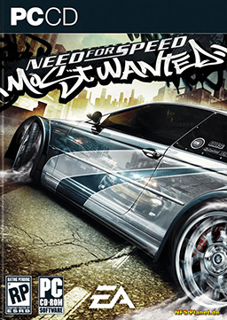
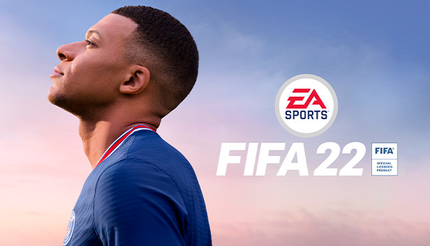
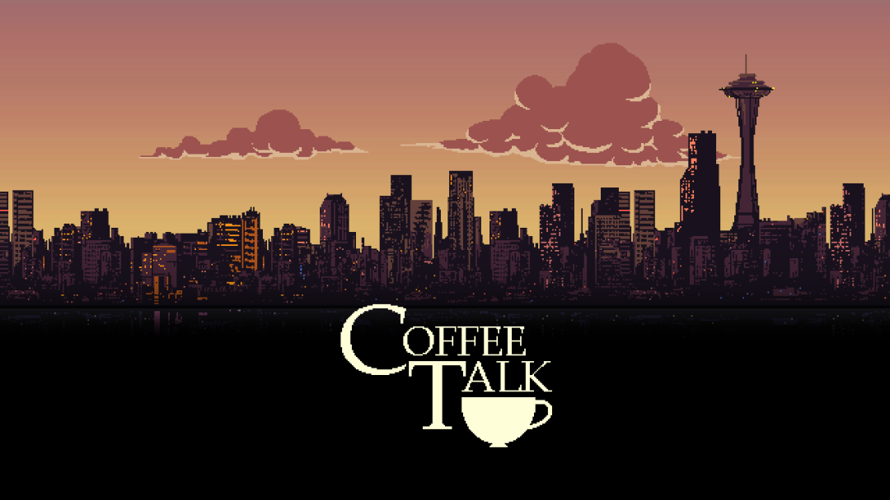
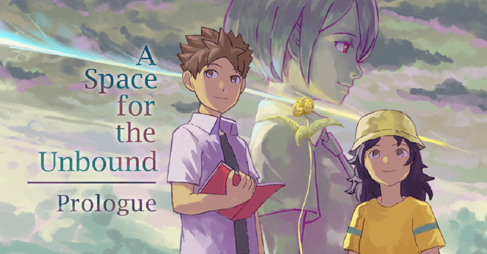
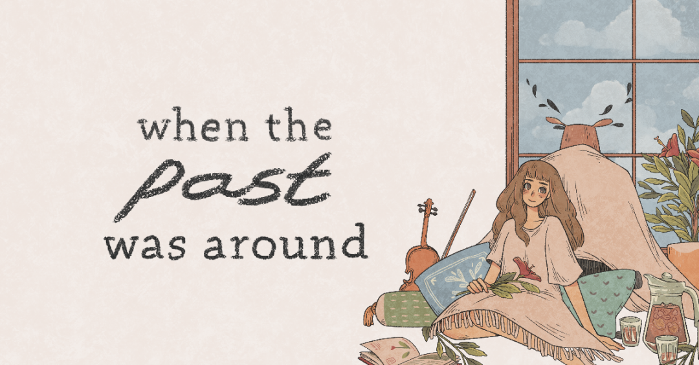

Penjelasan Beberapa Games Dari 3 Developer/Publisher
Wilujeng Sumping/Selamat datang
Diajar Animate dan Menu
Grand Theft Auto V
Grand Theft Auto V (GTA 5) adalah permainan aksi-petualangan 2013 yang dikembangkan oleh Rockstar North dan diterbitkan oleh Rockstar Games.
Ini adalah entri utama pertama dalam seri Grand Theft Auto sejak 2008 Grand Theft Auto IV. Berlatar di dalam negara bagian fiksi San Andreas,
yang berbasis di California Selatan, kisah pemain tunggal mengikuti tiga kriminal dan upaya mereka untuk melakukan pencurian sementara di bawah tekanan dari agen pemerintah dan tokoh-tokoh kejahatan yang kuat.
Desain dunia terbuka memungkinkan pemain bebas berkeliaran di pedesaan terbuka San Andreas dan kota fiksi Los Santos, yang berbasis di Los Angeles, Amerika Serikat.
Red Dead Redemtion 2

Red Dead Redemption 2 adalah permainan video aksi-penjelajahan tahun 2018 yang dikembangkan dan diterbitkan oleh Rockstar Games. Game ini adalah entri ketiga dalam seri Red Dead dan merupakan prekuel dari game
Red Dead Redemption tahun 2010. Ceritanya berlatar pada tahun 1899 dalam representasi fiksi dari Amerika Serikat Barat, Midwest, dan Selatan dan berpusat pada Arthur Morgan, seorang pelanggar hukum dan anggota geng Van der Linde.
Arthur harus menghadapi kemunduran Wild West sambil mencoba bertahan melawan pasukan pemerintah, geng rival, dan musuh-musuh lainnya. Cerita game ini juga berpusat pada sesama anggota geng John Marston, protagonis dari Red Dead Redemption yang pertama.
Game ini disajikan melalui perspektif kamera orang pertama dan ketiga, dan pemain dapat bebas menjelajah dalam dunia terbuka yang interaktif. Elemen-elemen gameplay termasuk tembak-menembak, perampokan, berburu, menunggang kuda, berinteraksi dengan karakter non-pemain,
dan mempertahankan peringkat kehormatan karakter melalui pilihan dan perbuatan moral. Sistem buronan yang mirip dengan sistem "wanted" dari seri Grand Theft Auto mengatur respons penegak hukum dan para pemburu bayaran atas kejahatan yang dilakukan oleh pemain.
Grand Theft Auto: San Andreas
Grand Theft Auto: San Andreas (sering disingkat sebagai GTA: SA atau GTA: San Andreas), adalah permainan video laga-petualangan yang dikembangkan oleh Rockstar North, dan diterbitkan oleh Rockstar Games.
Permainan ini adalah permainan 3D ke-7 dalam seri Grand Theft Auto, yang ke-5 pada rilis konsol dan permainan ke-7 secara keseluruhan. Pada awalnya dirilis untuk PlayStation 2 pada bulan Oktober 2004,
permainan ini kemudian di pemortakan ke Xbox dan Microsoft Windows, kini yang baru rilis Android dan menerima penerimaan dan penjualan yang tinggi pada tiga platform tersebut, dan mendapat rekor penjualan
permainan tertinggi di PlayStation 2. Grand Theft Auto: San Andreas diteruskan oleh Grand Theft Auto: Liberty City Stories dan didahului oleh Grand Theft Auto: Vice City.
Need For Speed: Most Wanted

Need for Speed: Most Wanted (NFS:MW) adalah permainan balapan multiplatform yang dikembangkan oleh EA Black Box dan pertama kali dirilis oleh
Electronic Arts di Amerika Serikat pada 15 November 2005.
Permainan ini merupakan bagian dari serial Need for Speed.
Star Wars Jedi: Fallen Order
Star Wars Jedi: Fallen Order adalah game aksi-petualangan 2019 yang dikembangkan oleh Respawn Entertainment dan diterbitkan oleh Electronic Arts.
Ceritanya berlatarkan alam semesta Star Wars, lima tahun setelah Star Wars: Episode III - Revenge of the Sith.
FIFA 22

FIFA 22 adalah permainan simulasi video game bertema sepak bola yang akan datang dan diterbitkan oleh Electronic Arts sebagai bagian dari FIFA seri.
Ini akan menjadi bagian ke-29 dalam seri FIFA, dan permainan Sepak bola ini bermultiplatform.
Coffee Talk

Coffee Talk adalah novel visual, dan dengan demikian, gameplay-nya sebagian besar terdiri dari dialog membaca. Dialog ini secara berkala dipecah oleh
permainan mini di mana pemain menyeduh berbagai minuman menggunakan bahan-bahan di kedai kopi. Minuman tertentu memberi pemain pilihan untuk membuat seni latte.
A Space for the Unbound

A Space for the Unbound merupakan game petualangan yang menceritakan dua karakter, Atma dan Raya sebagai anak SMA yang ingin
menyelidiki misteri kota mereka dengan latar belakang Indonesia pada dekade 90-an.
When the Past was Around

When the Past was Around berkisah tentang seorang perempuan muda bernama Eda sebagai karakter utama,
yang tengah ingin mencari tahu misteri masa lalunya bersama karakter pria berwajah burung hantu, The Owl.
Seperti nama gamenya, When the Past was Around atau dalam bahasa Indonesia berarti "Saat masa lalu ada di sekitar",
pencarian misteri masa lalu Eda dengan The Owl dilakukan melalui benda-benda kenangan yang berada di latar sekitarnya.